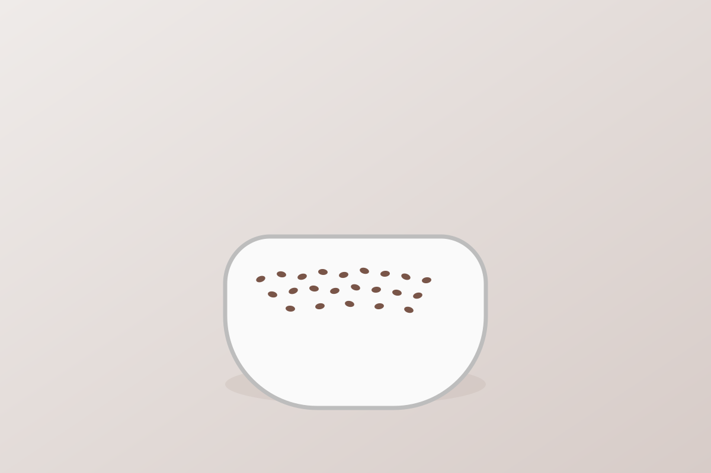

Flax Seeds
Quick answer
Flax seeds work well in anti-inflammatory food routines because they are simple add-ins for oats, yogurt, and other repeatable breakfast patterns.
What it is
Flax seeds are small edible seeds used in bowls, smoothies, yogurt, and simple meal add-ins.
Why flax seeds may support an anti-inflammatory diet
Flax seeds are useful because they strengthen breakfast and snack patterns without adding much complexity.
Key nutrients and compounds
- Fiber
- Healthy fats
- Magnesium
- Thiamin
Potential health benefits
- Supports easy breakfast add-ins
- Works in oats, yogurt, and smoothies
- Helps reinforce repeatable food routines
How to eat flax seeds
- Add flax seeds to oats or yogurt
- Blend them into smoothies
- Use them with nuts and berries in simple bowls
Shopping and storage
Store flax seeds sealed in a cool place. Use a format that fits your routine consistently.
FAQ
Are flax seeds anti-inflammatory?
They are commonly included in anti-inflammatory food patterns because they are easy, practical breakfast and snack add-ins.
Evidence note
Flax seeds are described here as a supportive ingredient within a broader eating pattern, not as a treatment by themselves.
The strongest factual framing on this page is limited to established nutrition context such as fiber, healthy fats, magnesium, and thiamin. The page does not claim that eating flax seeds guarantees a specific health outcome.